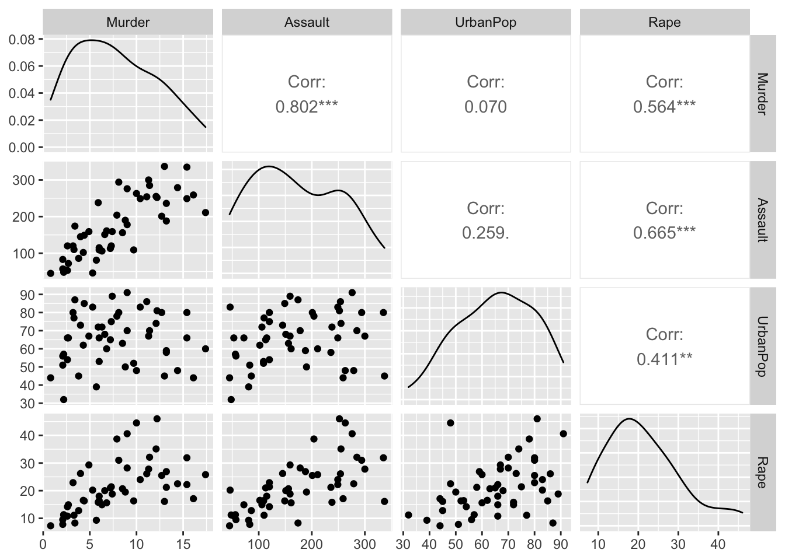
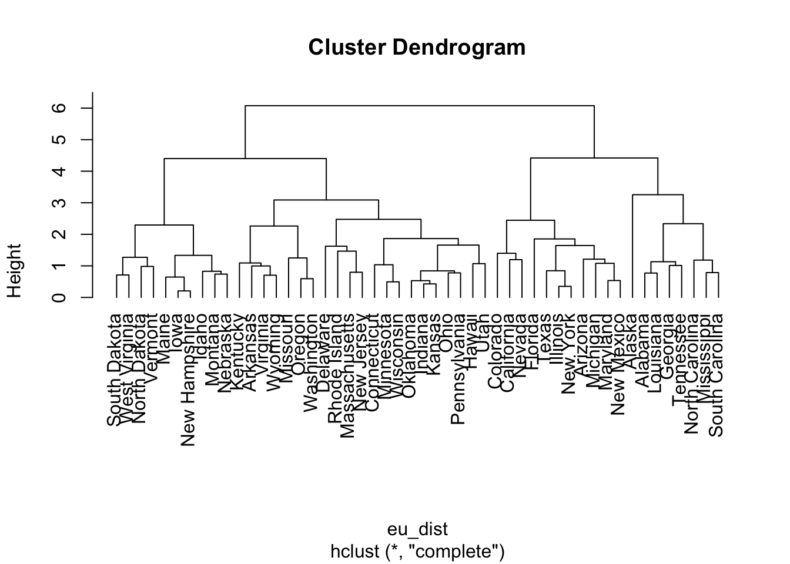
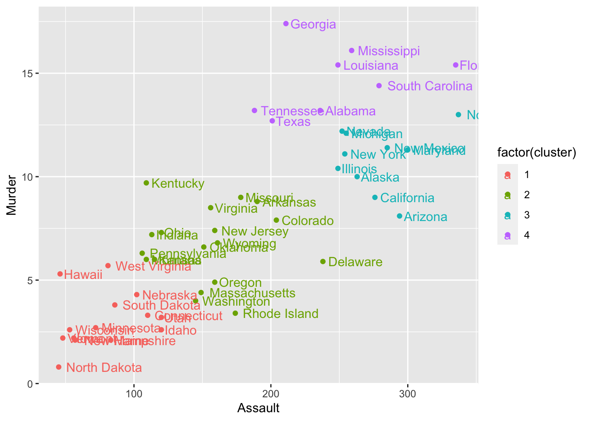
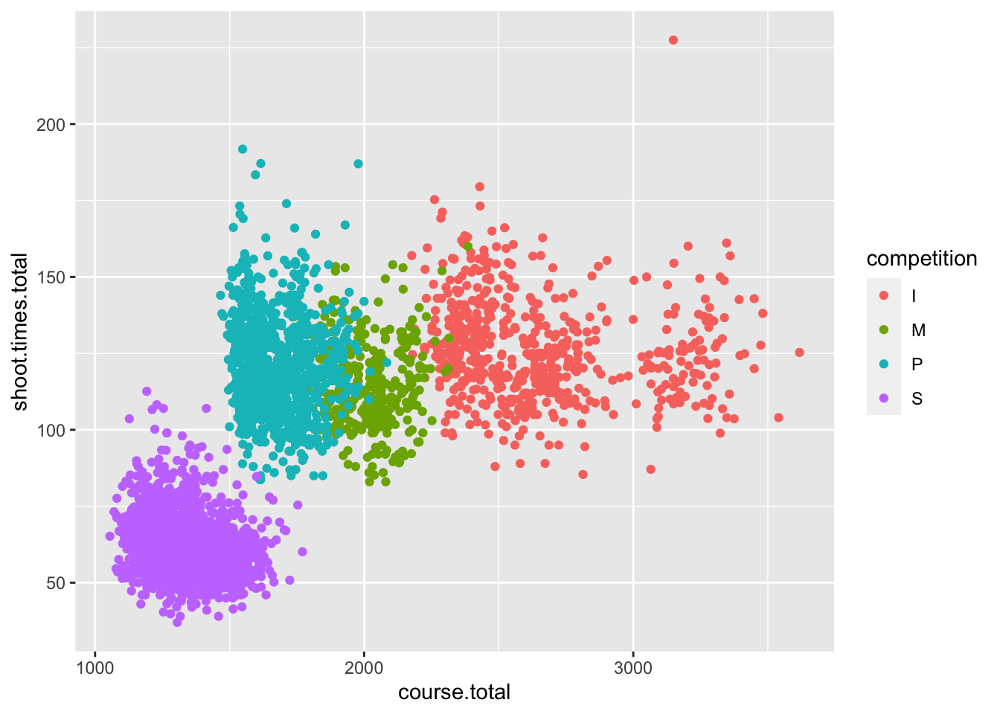
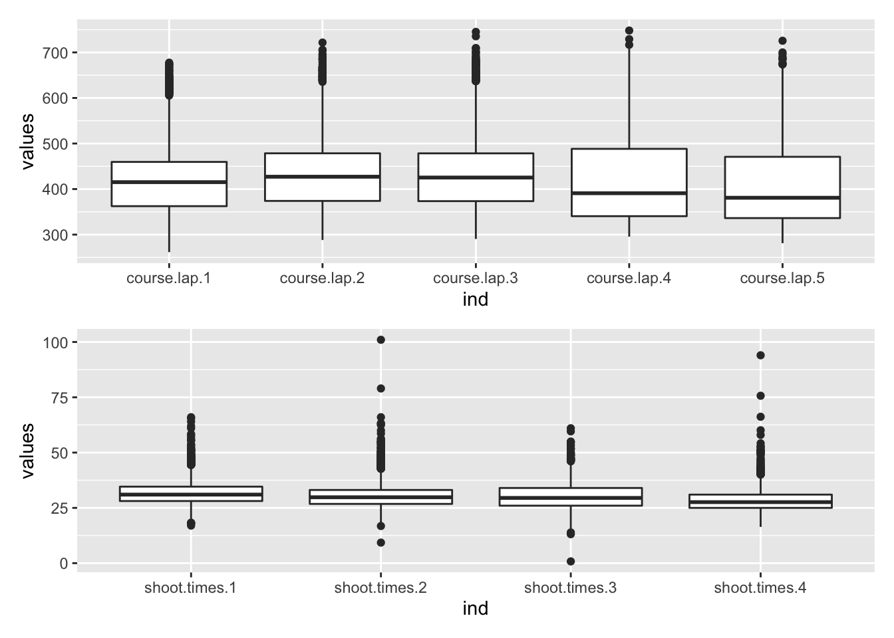
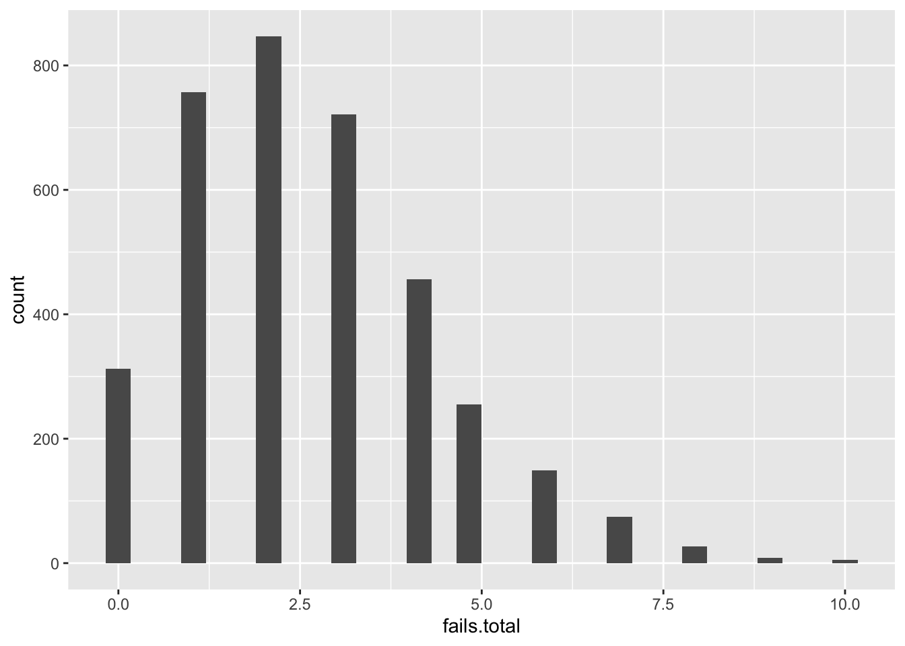
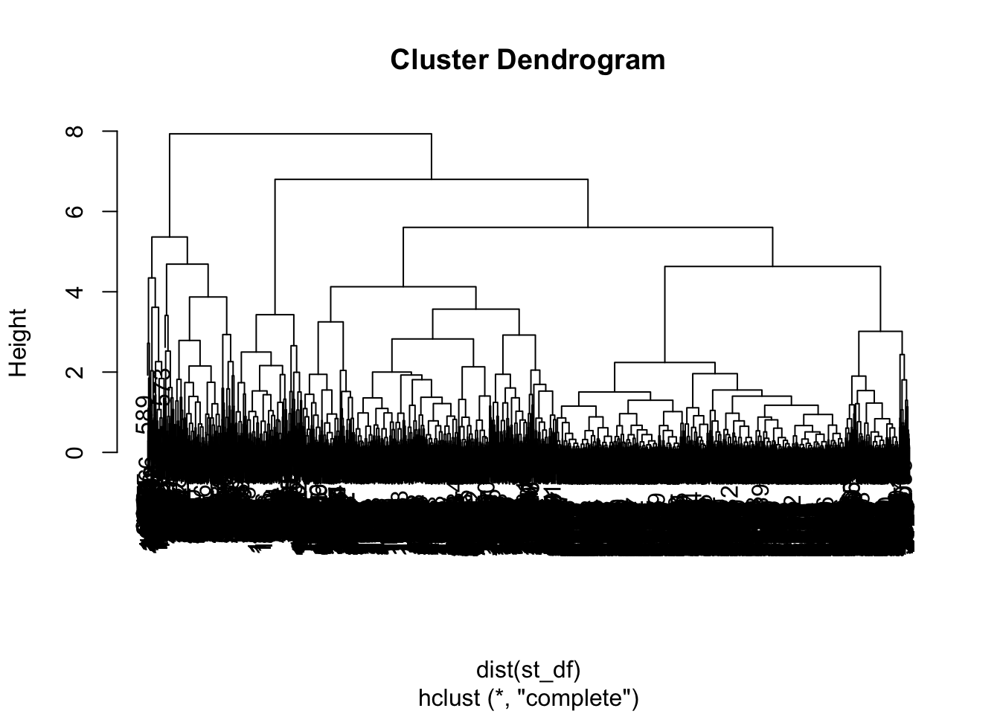
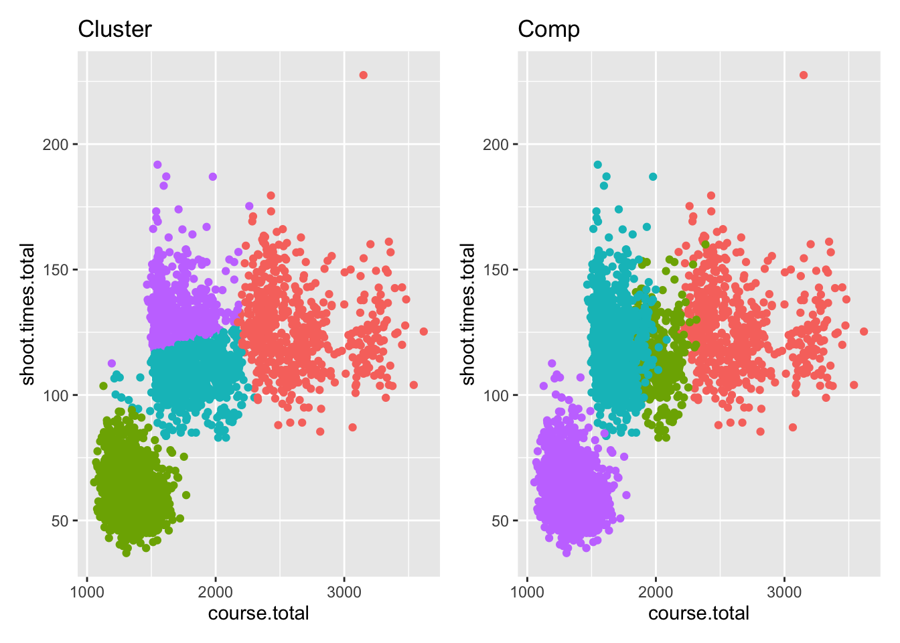

6 Clusteranalyse
library(tidyverse)
library(GGally)
library(ggpubr)6.1 Datensatz Tidyr
arrests <- tibble(USArrests)6.1.1 Umformung
arrests <- arrests %>%
mutate(state = rownames(USArrests))6.2 Deskription
6.2.1 kurze Analyse
arrests %>%
summarise(
avg_murder = mean(Murder),
sd_murder = sd(Murder),
avg_assault = mean(Assault),
sd_assault = sd(Assault),
avg_pop = mean(UrbanPop),
sd_pop = sd(UrbanPop),
avg_rape = mean(Rape),
sd_rape = sd(Rape)
)## # A tibble: 1 × 8
## avg_murder sd_murder avg_assault sd_assault avg_pop
## <dbl> <dbl> <dbl> <dbl> <dbl>
## 1 7.79 4.36 171. 83.3 65.5
## # … with 3 more variables: sd_pop <dbl>,
## # avg_rape <dbl>, sd_rape <dbl>6.2.2 Zusammenhänge
arrests %>%
ggpairs(columns = c("Murder", "Assault", "UrbanPop", "Rape"))## plot: [1,1] [=>------------------------] 6% est: 0s
## plot: [1,2] [==>-----------------------] 12% est: 0s
## plot: [1,3] [====>---------------------] 19% est: 0s
## plot: [1,4] [=====>--------------------] 25% est: 0s
## plot: [2,1] [=======>------------------] 31% est: 0s
## plot: [2,2] [=========>----------------] 38% est: 0s
## plot: [2,3] [==========>---------------] 44% est: 0s
## plot: [2,4] [============>-------------] 50% est: 0s
## plot: [3,1] [==============>-----------] 56% est: 0s
## plot: [3,2] [===============>----------] 62% est: 0s
## plot: [3,3] [=================>--------] 69% est: 0s
## plot: [3,4] [===================>------] 75% est: 0s
## plot: [4,1] [====================>-----] 81% est: 0s
## plot: [4,2] [======================>---] 88% est: 0s
## plot: [4,3] [=======================>--] 94% est: 0s
## plot: [4,4] [==========================]100% est: 0s
6.3 hierarchsiche Clusteranalyse
wichtig: - Standardisierung der Variablen - nur für metrisch skalierte Variablen
Vorbereitung
# Standardisierung
st_arrest <- scale(arrests[,-5]) #alle außer die states
# Distanzmatrix (euklidisches Maß)
eu_dist <- dist(st_arrest)Clusterisierung
h_eu_compl <- hclust(eu_dist)
h_eu_compl$labels <- arrests$state Darstellung mit Dendrogrammen
plot(h_eu_compl, hang = -1)
=> vermutlich beste Clusteranzahl = 4
6.4 partitionierende Clusteranalyse
k2 <- kmeans(st_arrest[,1:2], centers = 4, nstart = 50)
arrests %>%
mutate(cluster = k2$cluster) %>%
ggplot(aes(Assault, Murder, color = factor(cluster))) +
geom_point() +
geom_text(aes(label = state), hjust = -0.1)
6.5 Aufgabenblatt
Biathlon Datensatz
importe:
library(tidyverse)
library(GGally)
library(ggpubr)Datensatz einlesen
load("data/biathlon3.RData")
head(df.biathlon3,1) %>% t()## 1
## nation "FRA"
## gender "M"
## competition "I"
## type "W"
## total.time "2667.9"
## course.lap.1 "486.6"
## course.lap.2 "482.8"
## course.lap.3 "481.9"
## course.lap.4 "484.6"
## course.lap.5 "480.7"
## course.total "2416.6"
## shoot.times.1 "26"
## shoot.times.2 "23"
## shoot.times.3 "36"
## shoot.times.4 "32"
## shoot.times.total "117"
## fails.1 "0"
## fails.2 "0"
## fails.3 "0"
## fails.4 "1"
## fails.total "1"a) Betrachtung des Datensatzes
library(pastecs)
df.biathlon3 %>%
dplyr::select(course.lap.1:shoot.times.total) %>%
stat.desc(basic=F) %>%
t() %>%
as.data.frame()## median mean SE.mean
## course.lap.1 415.2 414.78749 1.23440998
## course.lap.2 427.1 428.50839 1.27495791
## course.lap.3 425.3 431.12730 1.31816930
## course.lap.4 390.9 421.09404 2.26134803
## course.lap.5 380.9 408.46061 2.16532519
## course.total 1556.7 1701.83214 8.32654983
## shoot.times.1 31.0 31.86822 0.08935101
## shoot.times.2 29.8 30.48364 0.09726272
## shoot.times.3 29.5 30.35905 0.14662694
## shoot.times.4 27.6 28.36341 0.13297238
## shoot.times.total 95.0 92.60725 0.53834769
## CI.mean.0.95 var std.dev
## course.lap.1 2.4202103 5503.85004 74.187937
## course.lap.2 2.4997094 5871.36979 76.624864
## course.lap.3 2.5844306 6276.10397 79.221865
## course.lap.4 4.4350467 9516.58623 97.552992
## course.lap.5 4.2467229 8725.54638 93.410633
## course.total 16.3252098 250425.13259 500.424952
## shoot.times.1 0.1751835 28.83677 5.369988
## shoot.times.2 0.1906953 34.16965 5.845481
## shoot.times.3 0.2875707 40.01049 6.325385
## shoot.times.4 0.2607908 32.90556 5.736337
## shoot.times.total 1.0554959 1046.82348 32.354652
## coef.var
## course.lap.1 0.1788577
## course.lap.2 0.1788177
## course.lap.3 0.1837552
## course.lap.4 0.2316656
## course.lap.5 0.2286895
## course.total 0.2940507
## shoot.times.1 0.1685061
## shoot.times.2 0.1917580
## shoot.times.3 0.2083525
## shoot.times.4 0.2022443
## shoot.times.total 0.3493749df.biathlon3$type <- factor(df.biathlon3$type)
df.biathlon3$competition <- factor(df.biathlon3$competition)
summary(df.biathlon3$competition)## I M P S
## 589 360 912 1751summary(df.biathlon3$type)## O W
## 525 3087df.biathlon3 %>%
ggplot(aes(x= course.total, y= shoot.times.total,color=competition)) +
geom_point() 
# facet_wrap(~gender)b)
library(patchwork)
df_laps <- df.biathlon3 %>% dplyr::select(course.lap.1:course.lap.5)
df_shoots <- df.biathlon3 %>% dplyr::select(shoot.times.1:shoot.times.4)
df_fails <- dplyr::select(df.biathlon3, fails.1:fails.4)
p1 <- ggplot(stack(df_laps), aes(x = ind, y = values)) +
geom_boxplot()
p2 <- ggplot(stack(df_shoots), aes(x = ind, y = values)) +
geom_boxplot()
p1 / p2 ## Warning: Removed 3502 rows containing non-finite values
## (stat_boxplot).
## Warning: Removed 3502 rows containing non-finite values
## (stat_boxplot).
ggplot(df.biathlon3, aes(x=fails.total)) +
geom_histogram()## `stat_bin()` using `bins = 30`. Pick better value
## with `binwidth`.
c) auwahl, standardisierung
st_df <- df.biathlon3 %>%
dplyr::select(course.total, shoot.times.total, fails.total) %>%
scale()
# mutate(comp = competition)
plot(hclust(dist(st_df)))
k <- kmeans(st_df[,1:2], centers = 4, nstart = 50)
p1 <- ggplot(df.biathlon3, aes(course.total, shoot.times.total)) +
geom_point(aes(color=factor(k$cluster))) +
theme(legend.position = "none") +
labs(title = "Cluster")
p2 <- ggplot(df.biathlon3, aes(course.total, shoot.times.total)) +
geom_point(aes(color=competition)) +
theme(legend.position = "none") +
labs(title = "Comp")
p1 + p2 